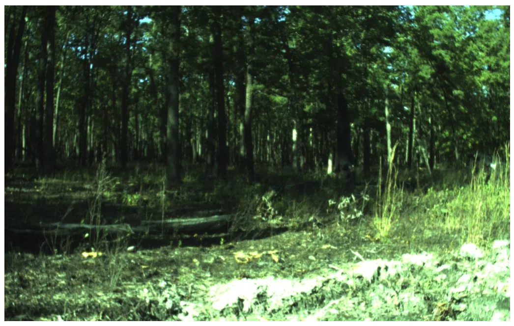
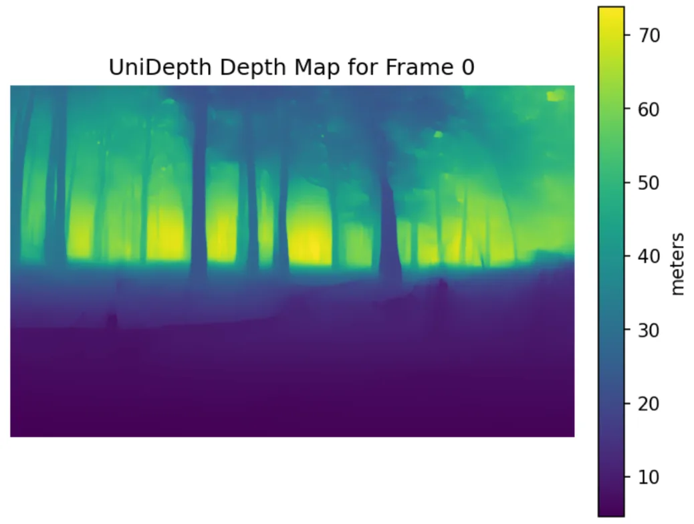
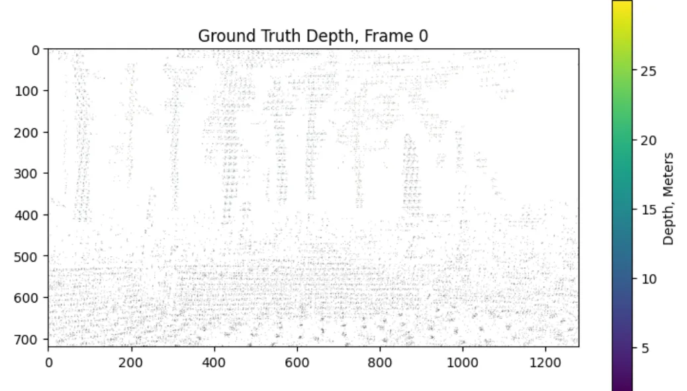
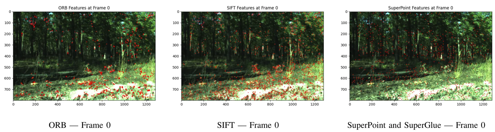
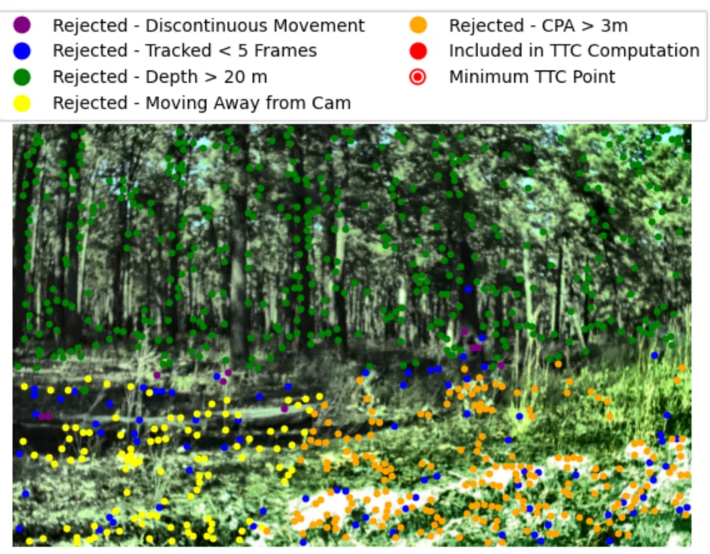
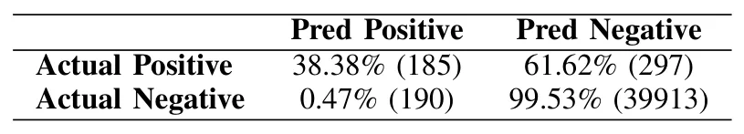
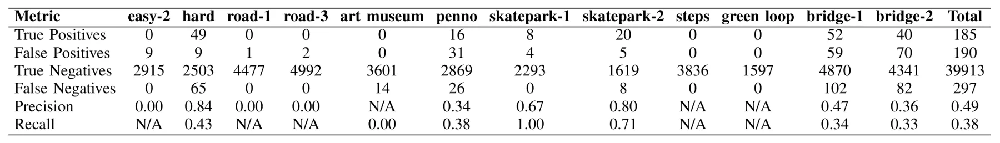
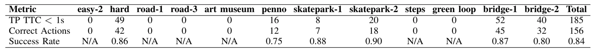

面向非结构化环境机器人的基于预训练视觉模型的 TTC 动态避障Time-to-Collision Based Dynamic Obstacle Avoidance Using Pretrained Vision Models for Robots in Unstructured Environments
贴近机器人安全感知、视觉深度和 BA 系统集成；无需训练的真实数据路线实用。当前 TTC 危险帧 precision/recall 不高，控制闭环安全性、深度尺度和动态/自运动分离仍需重点检查。
一句话工作总结
用预训练单目深度、特征匹配和 BA 估计关键点 TTC，再直接驱动移动机器人避障决策。
摘要
该工作提出一个无需机器人专用大规模训练和仿真策略迁移的视觉动态避障 pipeline。系统用 UniDepth 从 RGB 视频估计 dense depth，用扩展的 SuperPoint/SuperGlue 在长序列中跟踪 keypoints，再根据相机内参和预测深度将 2D keypoints 投影到 3D，并以这些点初始化 bundle adjustment。随后计算每个 keypoint 的 time-to-collision，选择地面二维 motion primitive 远离最危险的最近接近点。M3ED 真实数据实验显示，方法能在 22 个真实障碍物中的 20 个上至少检测到一次 TTC < 1s 的危险帧。
Dynamic obstacle avoidance in unstructured outdoor environments remains a critical challenge for autonomous mobile robots, particularly when large-scale robot-specific training data and simulation-based policies are impractical. We present a data-efficient, interpretable method for vision-based dynamic obstacle avoidance that operates entirely on real-world data, avoiding the sim-to-real transfer problem inherent in simulation-trained policies. Our approach leverages UniDepth, a large pretrained monocular depth estimation model, to produce dense depth maps from RGB video without requiring stereo cameras or LiDAR at inference time. Dynamic obstacle avoidance is achieved by extending the SuperPoint and SuperGlue feature correspondence pipeline to track keypoints across long frame sequences, projecting their 2D pixel-space positions into 3D using camera intrinsics and predicted depth, running bundle adjustment initialized from these 3D keypoints, and computing per-keypoint time-to-collision (TTC). A 2D motion primitive in the ground plane is then selected to move the robot away from the closest point of approach of the minimum-TTC keypoint. Evaluated on real-world data from the M3ED dataset, our pipeline achieves a precision of 0.49 and a recall of 0.38 in identifying frames with a ground truth TTC below 1 second, and correctly generates the evasive motion direction in 84\% of true positive detections. Crucially, it detects at least one frame with TTC less than 1 second for 20 out of 22 unique physical obstacles present in our test sequences. Unlike end-to-end learned methods that demand thousands of hours of robot-specific training data, our approach eliminates model training entirely, requiring only 74 seconds of data for hyperparameter tuning. This demonstrates exceptional data efficiency while preserving interpretable and generalizable behavior across diverse obstacle types.
中文解读摘录
- 链接：https://arxiv.org/abs/2607.07885 ｜ PDF：https://arxiv.org/pdf/2607.07885
- 中文题名：面向非结构化环境机器人的基于预训练视觉模型的 TTC 动态避障
- 关键信息：使用 UniDepth 从 RGB 视频估计 dense depth，扩展 SuperPoint/SuperGlue 长序列 keypoint tracking，再把 2D keypoints 通过相机内参与深度投影到 3D；以这些 3D keypoints 初始化 bundle adjustment，计算 per-keypoint time-to-collision，并选择地面 2D motion primitive 远离最危险的 closest point of approach。
- 为什么值得看：方法完全基于真实数据、无仿真策略训练和无 robot-specific 大规模训练，只用 74 秒数据调参；在 M3ED 数据上，22 个真实障碍物中 20 个至少检测到一次 TTC < 1s 的危险帧，true positive 避障方向正确率 84%。
- 需要核查：precision/recall 仍不高（0.49/0.38），需要关注误报/漏报对控制闭环的影响；UniDepth 深度尺度、BA 初始化、长序列匹配漂移、动态障碍和自运动解耦是否可靠。
图表/页面预览

{kind=link}

{kind=link}

{kind=link}

{kind=link}

{kind=link}

{kind=link}

{kind=link}

{kind=link}
